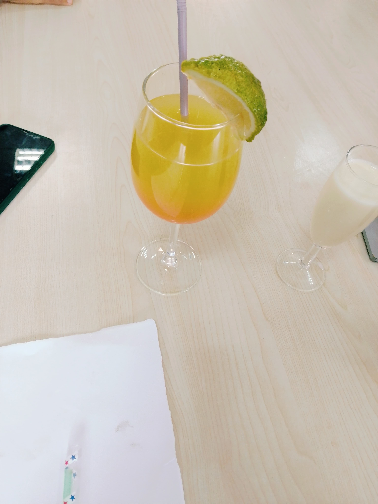
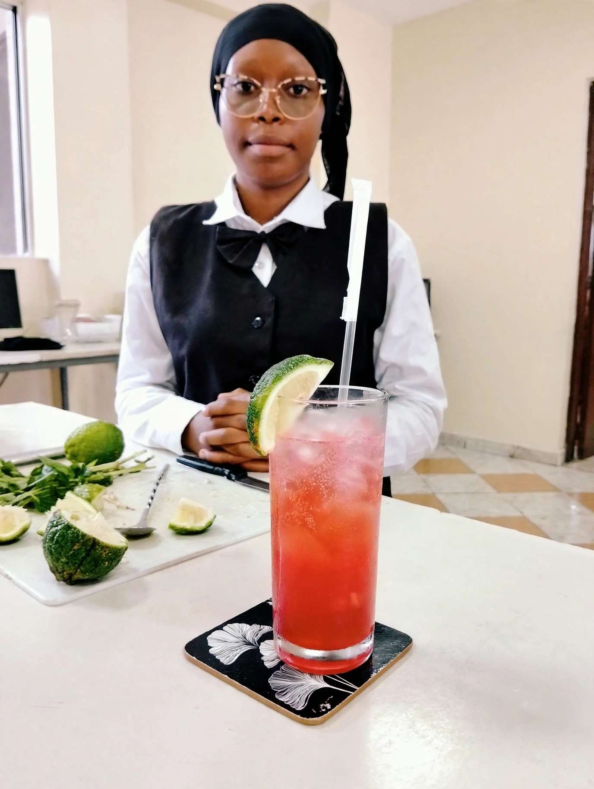
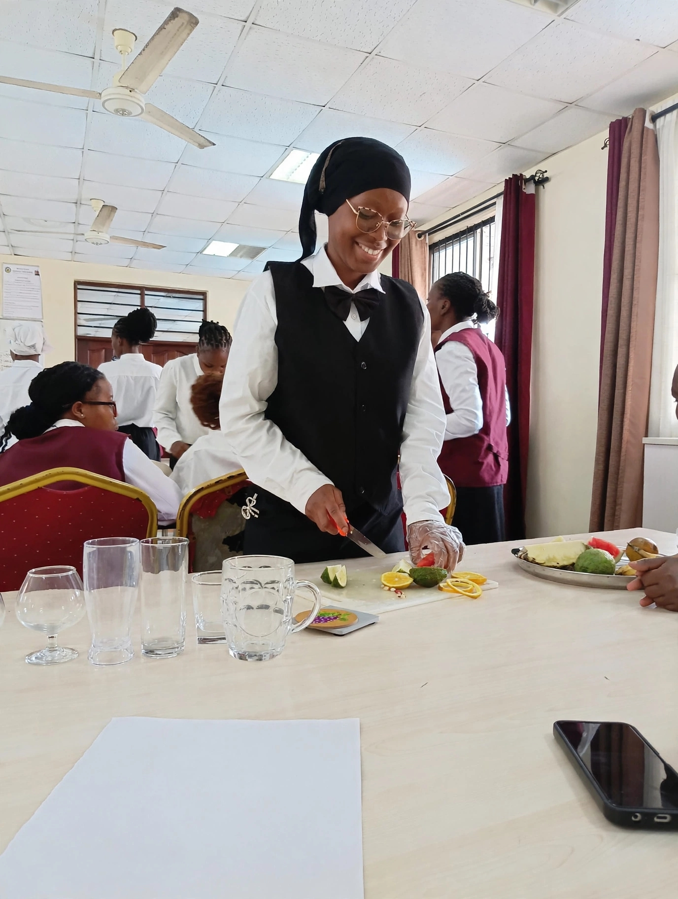
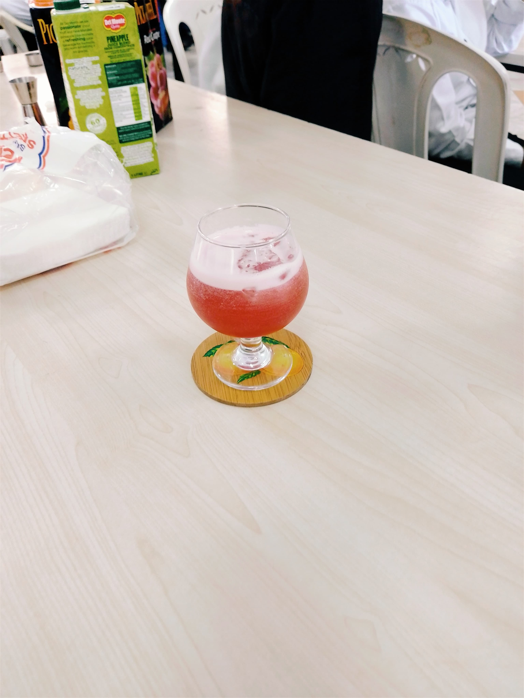
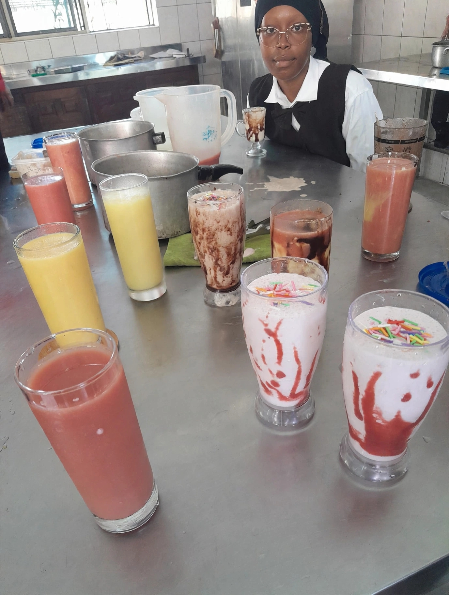
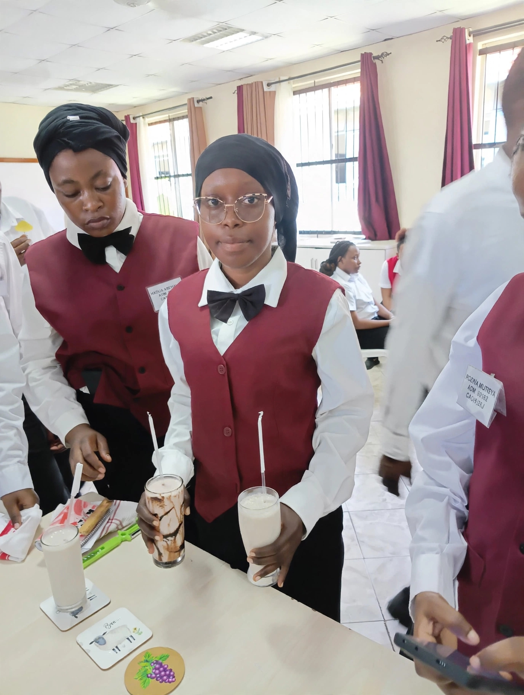

Core abilities
Key Skills

Bar Keeping
Beverage preparation, presentation, serving hygiene, and responsible customer service.

Main Meal
Preparing, cooking, portioning, and presenting balanced main-course meals.

Starter
Preparing attractive appetizers and starters with appropriate garnishing and presentation.

Digital Literacy
Using computers, digital records, communication tools, and online resources for hospitality learning.

Desserts
Preparing and presenting desserts with attention to flavour, texture, plating, and cleanliness.

Nutrition
Understanding balanced meals, healthy ingredients, food values, and nutritional meal planning.